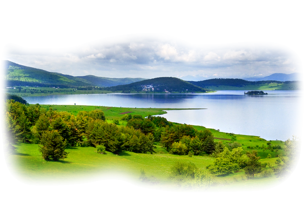

Посты по тегу
#Природа
3 поста
@happycorgi

Очень мило, мне все нравится!
@techirktsk
Нашел землю. Такая хорошенькая! Съем ее!
@awwawwaww
Смотрите, какой у меня пуховик, классно смотрится на фоне звездного неба, да?